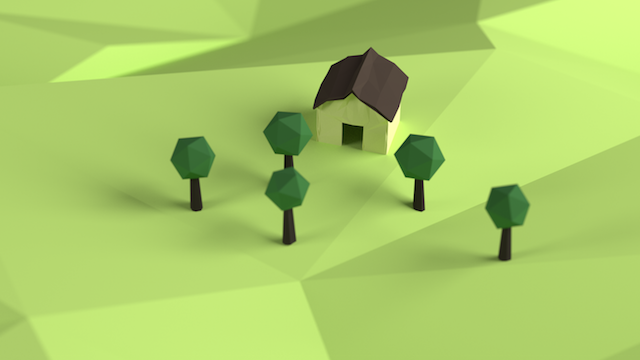
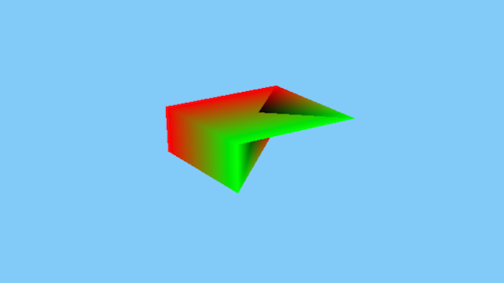
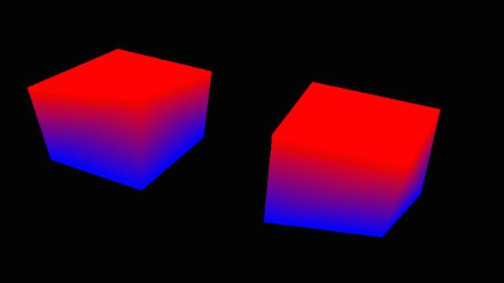
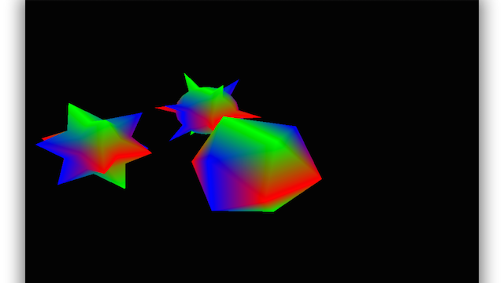
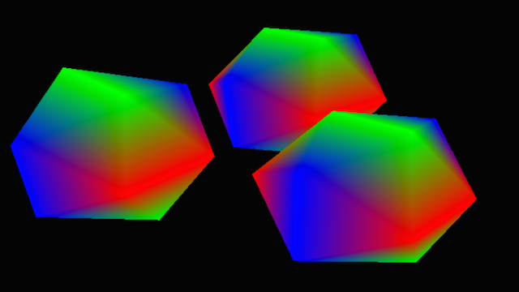
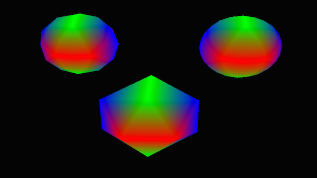
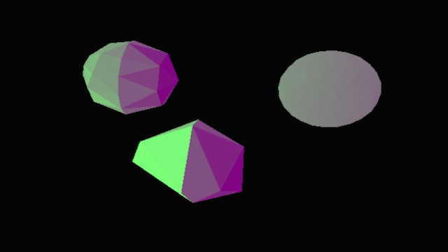
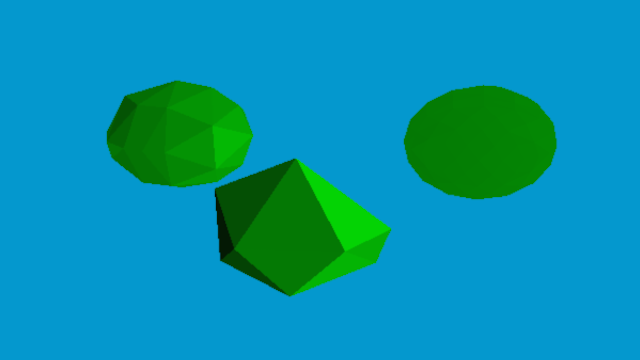
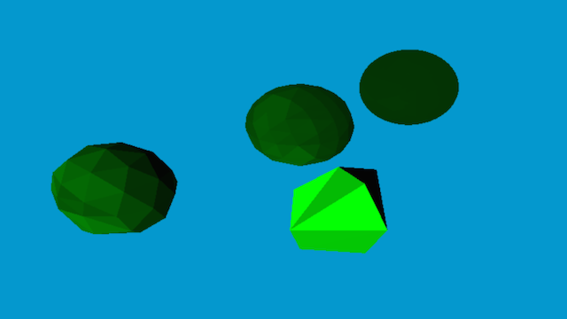
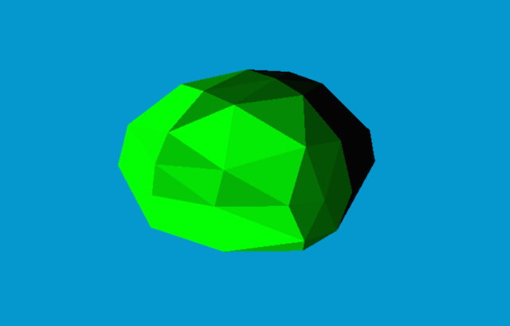

I have always been really excited about low-polygon art style. I believe it is an awesome stylised aesthetic and one that is likely to age very well. It seems like it is a modern take on what ‘pixel art’ once tried to achieved. Also, in no small part, this is also because of these WICKED avatars from the guys at polygon.com
This really stemmed from a couple points. Firstly, as I am interested in graphics, I felt like this would be a nice little task to tackle and try to explore. Secondly, I felt like it made it possible to render beautiful looking landscapes, but still using very little processing power, which would make it suitable for mobile devices and / or the web
Lastly, as I am completely artistically disabled (I cannot draw to save my life) and always being really interested in procedural generation, I felt like low polygon art provided a way in which one can ‘generate’ a pool of models, using predefined formulae and some minor randomisations
Which brought me to my first task. Try and find some model that I can create completely with code (no modelling) and try and give it that poly-art look. Unsurprisingly, I needed something that would be both fun to work with, but fundamentally very easy
For my first trial, I decided to tackle the object of creating the trees in the following image

The point being, they looked nice enough, and (at least seem) simple enough to generate. They idea, simply, was to create a simple Icosahedron to use as the tree ‘head’. To generate a bit more details, I would tessellate the faces to get more detail / polygons as needed
In addition, to best achieve the low-polygon look I was going to use per-vertex normals and some flat shading to make sure the polygons really popped up
So, with the concept solidly in my head, I set off to work. First thing first, render our starter ‘fail-safe’ cube to make sure everything was working as it is. Amazingly, sometimes this really can be the hardest part of the whole thing, because it involves a LOT of set-up and wiring. Predictably enough, I rendered my fist cube, but was greeted with this monstrosity

There was clearly something very wrong going on in here. I decided the best way to tackle this, would be to colour code the vertices, so I can try and figure out which were miss-behaving. Toggling each ‘axis’ vertices at a time, I ended up realising it was the last vertex that was causing some problems
Alas, I found out that the problem was I was passing in the size of my vertex data, instead of the size of the actual vertex array. Just by chance, this turned out to be equal to 7, which would then mean my last vertex (number 8) would not be passed in, and hence, its values were to be zeroed off. Graphics programming bugs are always the most fun ☺
Finally satisfied I had the correct cube rendering engine (wow, what an achievement :p) I wanted to start exploring the random generation of it. So, next up, was a little random function that would shift every vertex by a random value in the (x,y,z) spaces, and so, we would end up with some funky looking boxes. They might not look that random, but there is really so little space when improvising with cubes!

And then, the next step was that I wanted to plug in the icosaherdons to this generator system. Basically following Andreas Kahler’s excellent write up; I ported it to C++ / OpenGL and got myself some pretty nice icosahedrons

Also, adding in the same random vertex modifier as the cubes, we started to get more variation on the ‘tree heads’

Next up, tessellation. The idea was very simple, basically, go through all the generated polygons, and for each triangle, create 4 new inner triangles
However, the only problem, was that I forgot to normalise the newly generated vertices, and ended up with what I think, is the world’s first ever ‘medieval mace head generator’… TM!
thankfully, correcting that was simple enough and with more tessellation, we would go from icosahedrons to globes

With that in place, the next step was lighting. The idea was really simple, use the Phong shading method (sans the specular highlights for now) but make sure to average the normals for each polygon (ie: use per-face lighting instead of per-vertex). This, thankfully, turned out rather simple, and you can almost see it in effect

The reason you can barely see the icosahedrons in that image, is because there is no ambient lighting in there, only the diffuse lighting reflected off the surface is taking effect, and the faces looking away from the lighting get no illumination at all. To quickly (and rather stupidly, I might add) solve this, I added a constant ambient colour. Of course, this is not the correct way to do it, and what it does is simply highlight the colours the model doesn’t already have (here, red & blue or purple combined)

The correct way to do it, of course, was to multiply an ambiance value by the (using same RGB colours to simulate white light) by the model’s original colour. With a better background & correctly transposed normals, I ended up with better looking icosahedrons

Next up, playing around with the recursion, it was quickly clear that anything more than 2 iterations would hardly be noticeable, and in this specific case, detrimental to achieving that ‘low-poly’ look. In the image, you can see 4 variations of 0, 1, 2 & 3 tessellation passes on a generated icosahedron. I think you can easily tell which is which

Playing around with the tessellation numbers, the randomisations and the colours, I ended up with what is my best attempt at a randomly generated low-poly tree ‘head’. I am not 100% satisfied with a lot of things in this (colours contrast is too high), but as a first step in a work in progress, I was pretty happy about it

If you’ve made it this far, thank you very much for taking the time to read this. As always, you can checkout the code itself through the github repo. There is really no stable build, so most of the code is still in the ‘dev’ branch
Next, I want to try and port it to OSX first (faster prototype cycle and I don’t need to keep stealing my wife’s iPad) and then to windows as well